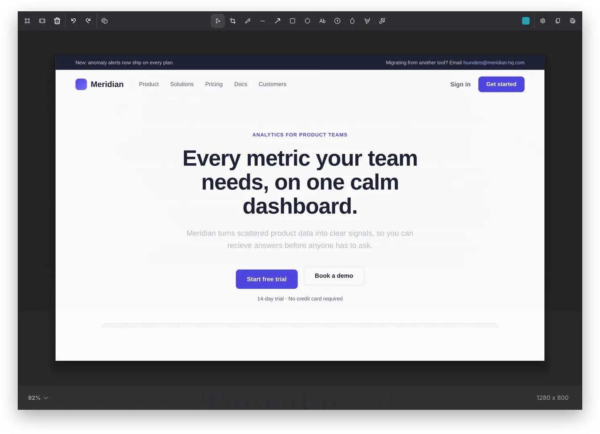
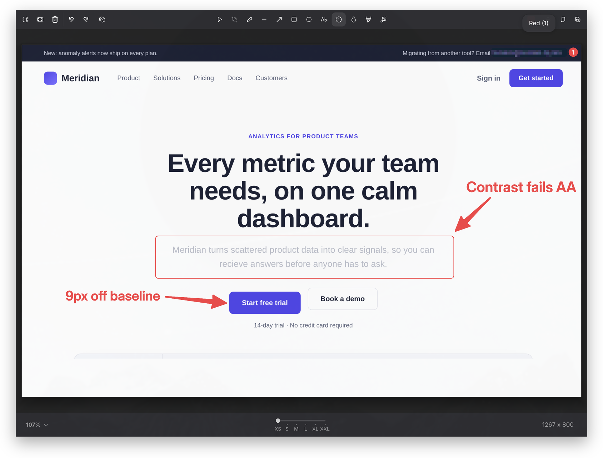
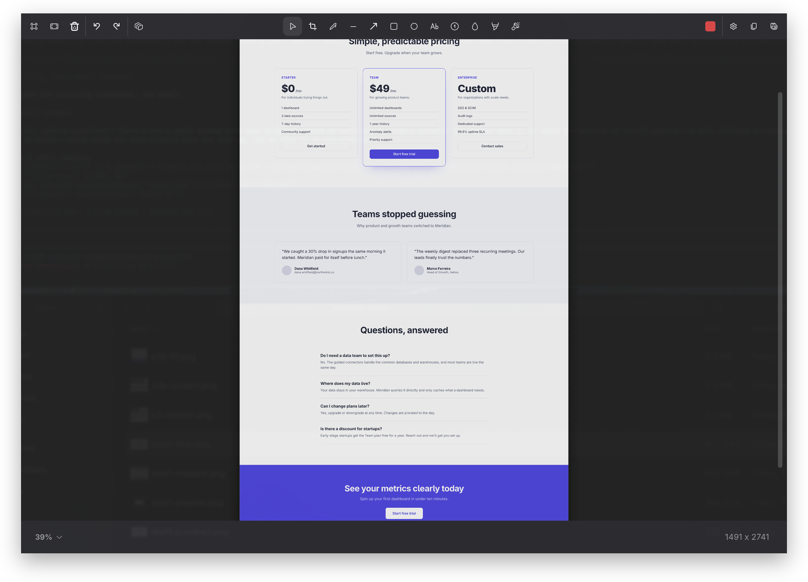
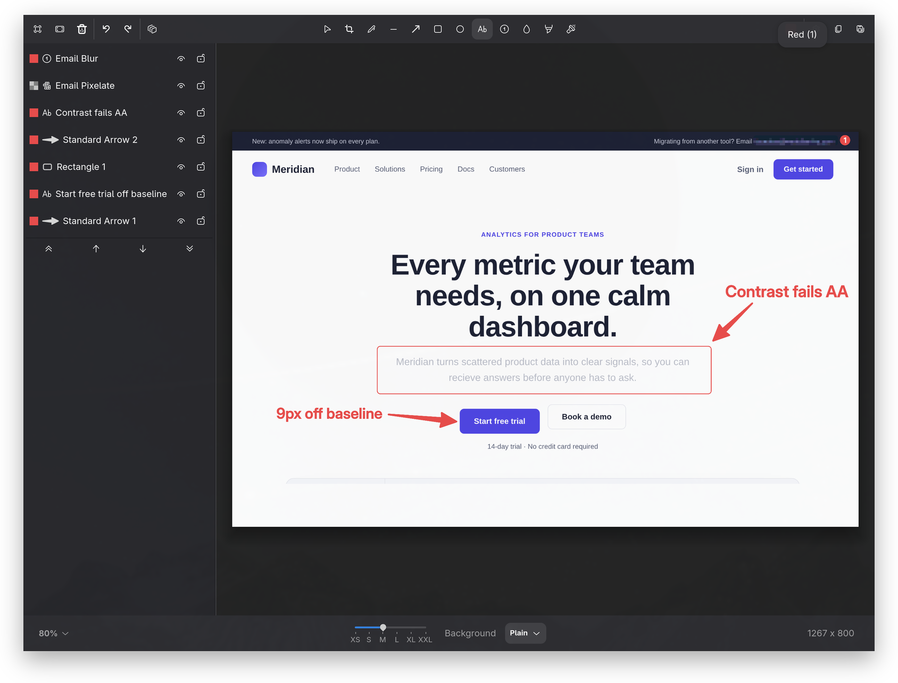
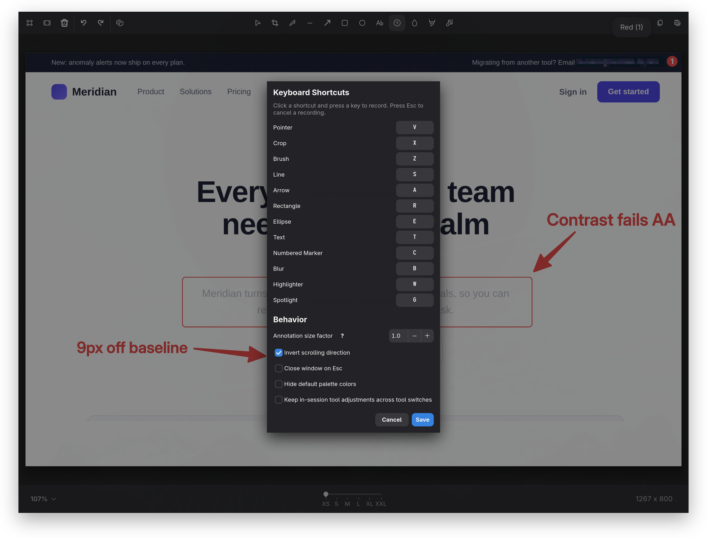

Mark up screens. Stitch tall captures. Move every annotation.
A Wayland screenshot annotation tool with the precision of a red pen.

Tensaku builds on satty (Matthias Gabriel's elegant Wayland screenshot annotator), keeping its fast, focused workflow while adding movable annotations, scroll capture, and a layer panel.
添削 (tensaku) is Japanese for "proofreading correction," the marks a teacher leaves on a student's paper.
The headline differences from upstream satty.
Capture content beyond the visible viewport, vertically or horizontally. Tensaku auto-scrolls the underlying app, captures each frame through a screencopy overlay, and stitches the results into one seamless screenshot.
Select, multi-select, drag, and resize annotations after they're drawn — or nudge a selection with the arrow keys. No more "draw it perfectly the first time": every shape, line, and marker stays editable.
A full layer-stack UI: reorder, lock, hide, rename, and drag-and-drop your annotations. Selection halos and panel rows mirror each other, so what's active is always clear. Ctrl+L toggles the panel.
Ctrl+V drops a clipboard image into the canvas as a resizable, movable layer. Annotate over it, reorder it in the layer panel, or undo it like any other annotation.
Zoom indicator dropdown, Ctrl+digit shortcuts, and Ctrl+scroll to zoom, all DPR-aware — and it leaves your compositor's Super bindings untouched.
Every tool's default shortcut sits on the left half of the keyboard, so your right hand never leaves the mouse. Switch tools without reaching across to hunt for a key — a real comfort on a split keyboard.
GTK4 tooltips replaced with rich popovers showing live state for arrow style, blur style, highlighter mode, and more.
A vetted default palette in a vertical 2-column picker, plus a system color dialog for everything else.
Selection chrome looks crisp at any display scale; corner / edge handles use display-pixel sizing.
Standard, Pointy, Curved, and Double arrow geometries for pointing more expressively.
Freeform highlighting or a Text-Locked mode that snaps to detected text rows.
Constrain crops to common ratios (16:9, 4:3, 1:1, …) with auto-snapping when you switch ratios.
Dim the screenshot around a spotlight region. Existing annotations stay bright on top, so callouts don't get washed out.
First-launch onboarding plus a GUI for the configuration that previously required editing config.toml.
Responsive wrap layout, Ctrl+T to toggle all UI chrome, popover-dismiss handling, and inline help.
Pixelate, Secure Blur, Gaussian, and Black Out. Choose the right redaction per region from an icon-menu, with irreversible variants for sensitive content.
Per-annotation smoothness with an RDP-then-Chaikin pipeline: clean curves from imprecise input, dialed in per stroke instead of one global setting.
Rotate 90°, flip horizontal, direct width/height entry with a ↔ swap, background matte picker, and Ctrl+wheel to resize proportionally from center.
The foundation Tensaku is built on: every original satty feature still works.
Arrow, rectangle, ellipse, line, brush, text, blur, highlight, crop, all with size, color, and style controls.
Write a PNG / JPEG / WebP to disk or copy directly to the Wayland clipboard. Pipe to - for stdout.
Every shortcut is rebindable via ~/.config/tensaku/config.toml, including chord-style bindings.
Window-decoration hints, no-decoration mode, and clean integration with tiling compositors.
Style the toolbar, popovers, and dialogs via a user CSS file. Minimum-size and chrome options exposed.
Full undo stack across drawing, moving, deleting, and cropping. Ctrl+Z / Ctrl+Shift+Z.
Map keys to specific actions (save-and-copy, save-and-exit, etc.). Configurable enter/escape behavior.
Tensaku runs on Wayland compositors that implement wlr-layer-shell and wlr-screencopy (Sway, Hyprland, river, Wayfire, etc.).
Install straight from the AUR — the package tracks every release. Works with paru or any other AUR helper.
yay -S tensakuOne command — needs a Rust toolchain and the GTK4/Adwaita dev headers (it builds from source).
cargo install tensakuRequires Rust 1.75+ and GTK4 development headers.
git clone https://github.com/jondkinney/tensaku
cd tensaku
cargo install --path .Already running satty? Tensaku reads its own config at ~/.config/tensaku/ and installs safely alongside — both binaries coexist.
Two steps: get a screenshot into Tensaku, then annotate it.
Point OMARCHY_SCREENSHOT_EDITOR at a small Tensaku wrapper — your screenshot keys then open every capture straight in, window highlighting and all. The README has the wrapper.
slurp is a region picker — drag a box; a plain click cancels it.
grim -g "$(slurp)" - | tensaku --filename -Or grab the whole screen: grim - | tensaku --filename -
Pick a tool, mark up the screenshot, then Ctrl+C to copy the result or Ctrl+S to save.
To capture content taller than the screen, launch the dedicated mode with tensaku --scroll-capture (or bind it to a key — see the README). Drag a region in the overlay, then click the ▼ (vertical) or ▼ (horizontal) Auto-Scroll button. Tensaku scrolls the underlying app, stitches the frames, and opens the result to annotate.
Annotation, scroll capture, and the layer panel in action.



